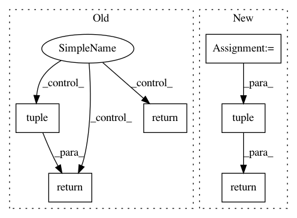

97031ed8f6afaf26a21dd98bb0bfdb4cacc65ca2,keras/layers/wrappers.py,Bidirectional,compute_output_shape,#Bidirectional#Any#,277
Before Change
def compute_output_shape(self, input_shape):
if self.merge_mode in ["sum", "ave", "mul"]:
return self.forward_layer.compute_output_shape(input_shape)
elif self.merge_mode == "concat":
shape = list(self.forward_layer.compute_output_shape(input_shape))
shape[-1] *= 2
return tuple(shape)
elif self.merge_mode is None:
return [self.forward_layer.compute_output_shape(input_shape)] * 2
def call(self, inputs, training=None, mask=None):
After Change
output_shape = output_shape[0]
if self.merge_mode == "concat":
output_shape = list(output_shape)
output_shape[-1] *= 2
output_shape = tuple(output_shape)
elif self.merge_mode is None:
output_shape = [output_shape] * 2
if self.return_state:
if self.merge_mode is None:
return output_shape + state_shape * 2
return [output_shape] + state_shape * 2
return output_shape
def call(self, inputs, training=None, mask=None, initial_state=None):
kwargs = {}
if has_arg(self.layer.call, "training"):
In pattern: SUPERPATTERN
Frequency: 3
Non-data size: 6
Instances
Project Name: keras-team/keras
Commit Name: 97031ed8f6afaf26a21dd98bb0bfdb4cacc65ca2
Time: 2018-01-11
Author: myutwo150@users.noreply.github.com
File Name: keras/layers/wrappers.py
Class Name: Bidirectional
Method Name: compute_output_shape
Project Name: NifTK/NiftyNet
Commit Name: 898a9387984d8434245618eda47a6e3f052bbba0
Time: 2018-03-20
Author: wenqi.li@ucl.ac.uk
File Name: niftynet/utilities/user_parameters_regex.py
Class Name:
Method Name: match_array
Project Name: NifTK/NiftyNet
Commit Name: 9b638935feccbb0fce928b5e9e38616c74960394
Time: 2017-08-30
Author: wenqi.li@ucl.ac.uk
File Name: niftynet/engine/image_window.py
Class Name:
Method Name: _read_window_sizes